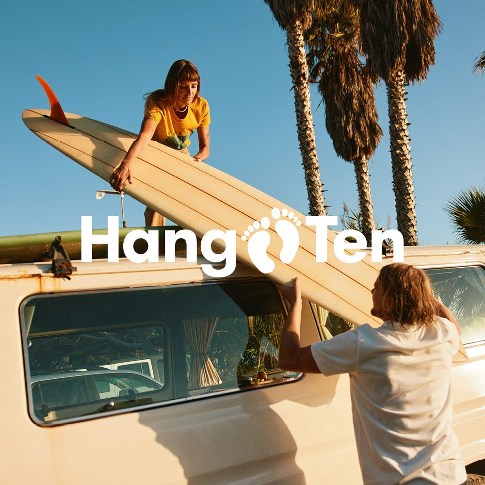
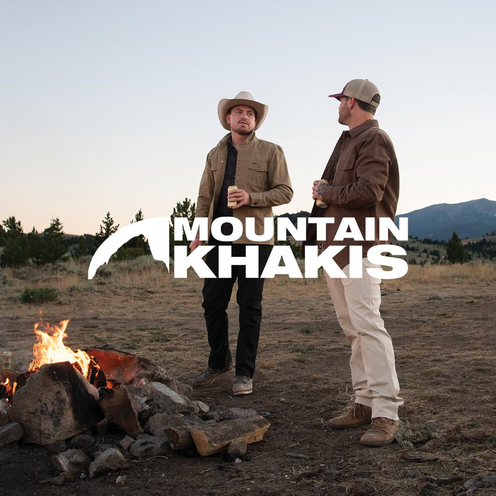
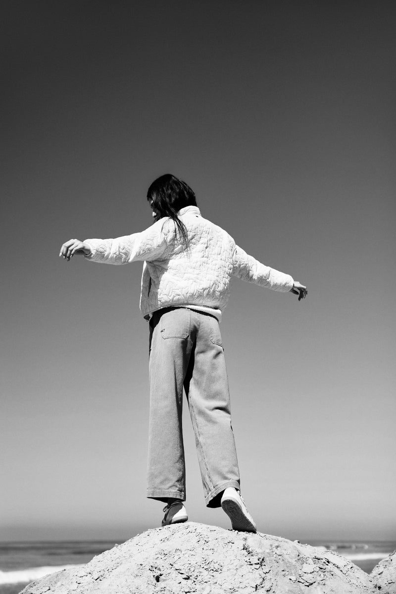
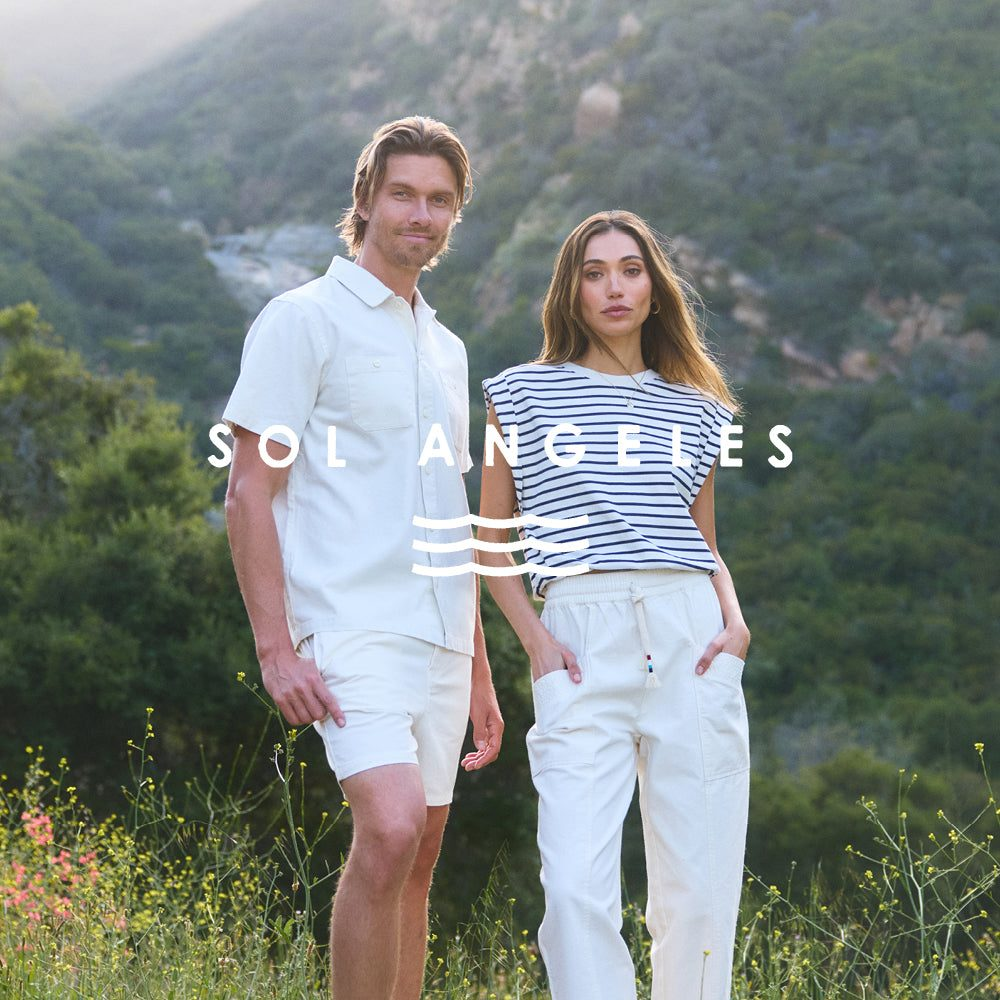

La Jolla Group
Company study · 2026-11-16
Late-day light on water and dirt roads, shot like a surf film still. The site is a thin frame for its portfolio brands: each tile is one photograph with a white logo laid over it. Positioning is operator-calm, heritage surf and outdoor, with the brands, not the group, as the visual voice.
 (01)
(01)


(02)

(03) (04)
(04)


(05)

(06) (07)
(07)
Palette · measured from images
#4D4639#22201A#B2C2C8#EDEFED#4E5C64#888B8AVisual themes
- Surf heritage
- Key motifs: waves at low sun, boards on camper vans, palm rows. Sub motifs: monochrome versions of the same scenes; tidal pools.
- Outdoor camp
- Key motifs: campfire, dirt road, hats and khaki clothing. Sub motifs: dusk sky, long shadows.
- Easy lifestyle
- Key motifs: couples in white on hillsides, a figure walking a marsh. Sub motifs: clean, loose clothing.
- Logo on photo
- Key motifs: a large white logo set across the middle of each image. Sub motifs: sports-bra and denim fashion tile for PSD.
Hero element
The home page headline reads ‘You built the brand. We scale it.’; La Jolla Group is a multi-brand operator with 30+ years experience building and operating consumer brands, with a portfolio of heritage and growth-stage apparel brands across surf, outdoor and lifestyle (https://lajollagroup.com/, retrieved 2026-11-16). No material or product is shown.
The brand tiles are the hero: a single clean photograph per brand with a white logo mark centered across it; the group stays in the background.
Visual elements
- Photography
- Golden-hour or overcast soft light; natural settings; one or two people, not posed to camera; both color and black-and-white.
- Type and graphics
- Bold uppercase sans headline on the site; each portfolio brand’s own wordmark in white on its photo.
- Layout habits
- Square tiles in a grid, a video block at the top, short text blocks with a lot of white space.
- Detail
- Not applicable (no product close-ups on the page).
Visual story
Headline claim, a lead-by-operators paragraph, a founders block (‘For founders ready to scale’), the brand portfolio tiles, then a closing line (‘We strengthen everything behind it’). Operator first, brands as proof.
Notable products
None shown. Brand tiles stand in for products; O’Neill, Hang Ten and Mountain Khakis carry the heritage look.
Method and limits
- Palette basis
- Board images (01) to (04), (06) and (07) plus two more images (a beach couple, the O’Neill tile); six clusters kept after dropping near-duplicates
- Limits
- The group’s brands (O’Neill, PSD, Hang Ten, Mountain Khakis, Sol Angeles, Voyager) have their own looks; separate boards would be needed for each. Source lines use file names read from the page; image credits are not stated on the page.
Credits and licenses
(01) Wave breaking at dawn light, video poster on the home page. La Jolla Group. Brand image, study use. source
(02) Hang Ten tile: woman on a surfboard on a camper van roof, palms, logo overlay. La Jolla Group. Brand image, study use. source
(03) Mountain Khakis tile: two people at a campfire at dusk, logo overlay. La Jolla Group. Brand image, study use. source
(04) PSD tile: model in sports bra and jeans on brown ground, logo overlay (hero element: logo over photo). La Jolla Group. Brand image, study use. source
(05) Monochrome figure on a rock with open arms, home page. La Jolla Group. Brand image, study use. source
(06) Sol Angeles tile: couple in white on a green hillside, logo overlay. La Jolla Group. Brand image, study use. source
(07) Voyager tile: person walking at a tidal marsh at dusk, logo overlay. La Jolla Group. Brand image, study use. source